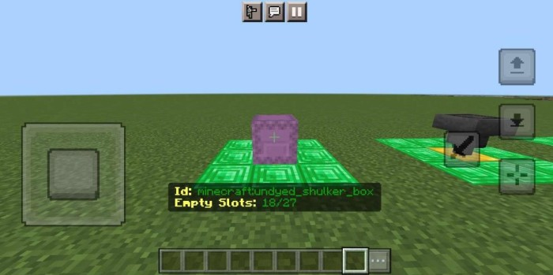
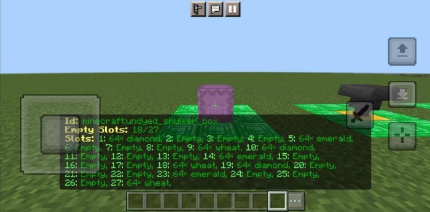
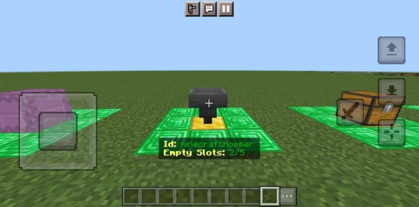
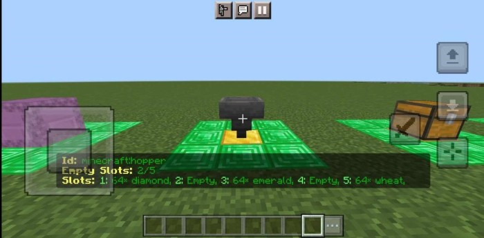
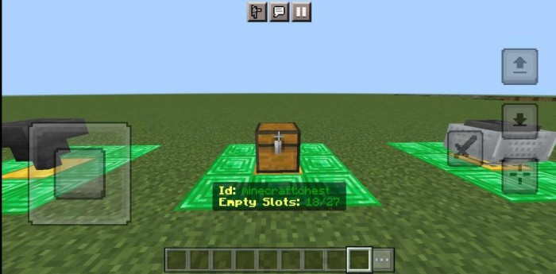
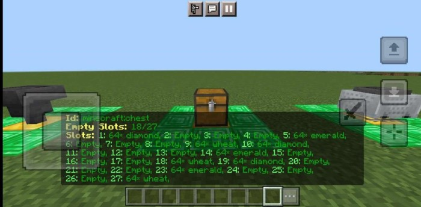
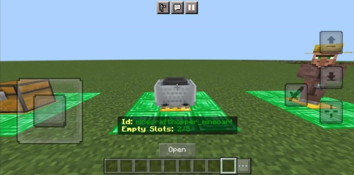
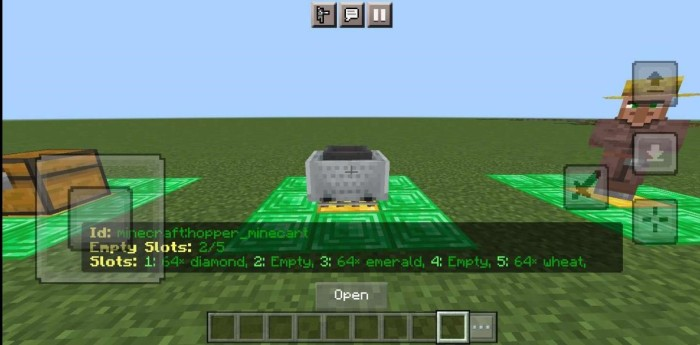

Chest Peek
See into the inventory of any mob or block using this addon. This addon can prove to be a lifesaver in case you have a chest monster in your world and don't want to go through every chest and shulker box to find a item.
How to use?
> Download the provided behavior pack through the "DOWNLOAD" link.
> Import it into Minecraft.
> Apply it to your world.
> Look at any block or entity that has an inventory to see its id and number of slots.
> Sneak while looking at the block or entity to see the contents of their inventory.
WORKING IMAGES:








REQUIREMENTS:
• You need "Beta APIs" experimental toggle enabled.
Copyright message:
All of the content of this addon is my original work and if you want to redistribute or use any part of this addon, however little it may be, please ask for my permission first.
Supported Minecraft Versions:
* 1.19.80
* 1.20